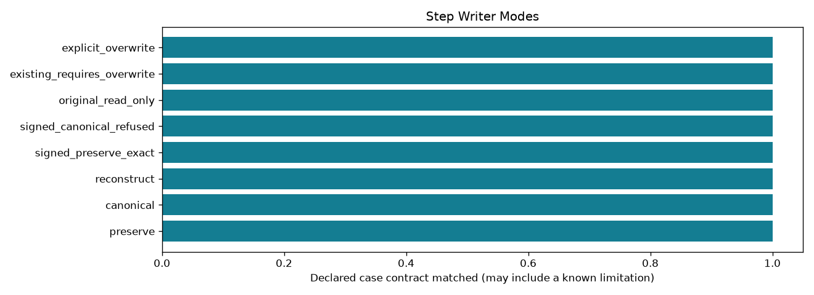

Offline, bounded research controls. A passing check may document a failure or an abstention.
| control_id | outcome | checks_pass |
|---|---|---|
| preserve | identical_tokens | True |
| canonical | identical_tokens | True |
| reconstruct | regenerated | True |
| signed_preserve_exact | matched | True |
| signed_canonical_refused | matched | True |
| original_read_only | matched | True |
| existing_requires_overwrite | matched | True |
| explicit_overwrite | matched | True |
Detailed evidence · CSV · Contract
